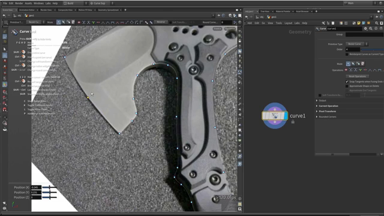
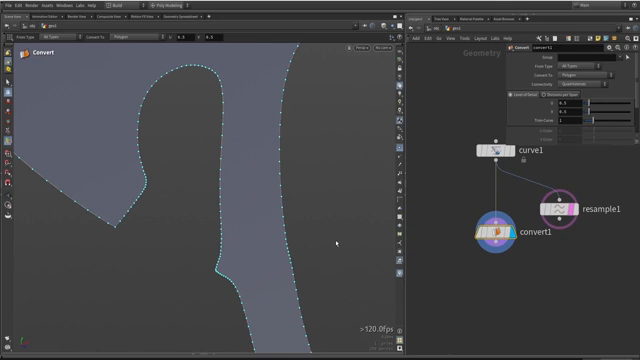

Houdini で斧を作る 1 — 参照画像とカーブで輪郭を取る
出典: Axe modeling || Houdini tutorial （Simon Houdini さん / 2023-12-29 / 1:07:59 / 英語）の 0:00〜11:35 部分。 このページは、上記の動画を見ながら自分用にまとめた日本語の学習メモです。作者公式の翻訳ではありません。
このシリーズについて
Houdini でブーリアンを主体にしたハードサーフェスモデリングで斧を作るチュートリアルです。 1時間8分あり、チャプターが25個に切られています。
このチュートリアルは、すべてを100%完璧に作ることが目的ではありません。 どう組み立てて、どう修正していくかという全体の流れを扱います。 プロシージャルなので、あとからいくらでも変えられます。
この記事では、参照画像を読み込んでカーブで輪郭をなぞり、ポリゴンに変換するまでを扱います。
1. 参照画像を読み込む
3Dモデリングを始めるとき、まずは参照が欲しくなります。
Houdini には Reference Images というノードがあり、
画像を指定するだけでビューポートに表示できます。
動画では実際の斧の写真を1枚読み込んで、それをなぞる形で進めていました。
2. カーブツールで輪郭をなぞる

ジオメトリの中に入り、Curve を置いて輪郭をトレースしていきます。
カーブの種類
Tab メニューにはいくつか候補が出ますが、これらはすべて Curve のプリセットです。
| 種類 | 性質 |
|---|---|
| Bezier | 丸みのあるカーブ。今回はこれを使います |
| Polygon | 直線のみ。折れ線になります |
| Spline | スプライン |
上の画像のパラメータパネルでも Primitive Type が Bezier Curve になっています。
斧のようになめらかな輪郭には Bezier が向いている、という判断です。
ノードを置いたあとでも、パネルの Primitive Type を切り替えれば種類を変えられます。 動画では Polygon に切り替えて「これだと折れ線しか描けません」と実演していました。
参照画像が見えないとき
ビューポートに参照画像が出ていない場合は、サイドの表示設定から
show all objects を有効にします。
描き方
- クリックすると直線の点が置かれます
- 押したままドラッグすると、カーブを持った点になります
Auto Smoothのようなモードもあり、動画でも試していました （ただし「必ずしも完璧ではない」とのことで、あとで手直ししていました）
最初から完璧を目指す必要はありません。 ベースの形が入っていれば、それだけで十分です。
Edit Mode で整える
描いたあとは Edit Mode に切り替えます。ここでできることが実用的でした。
- 点を掴んで動かす
- 点をコーナーポイントに変換する（丸みを消して角にする）
- 線そのものを掴んで、軸に沿って揃える
- 点を削除する
- スムージングや点の均等化（ただし「思ったとおりにならないことが多いので、結局は手で動かしています」とのこと）
刃の付け根のように角にしたいところはコーナーに、 刃先のようになめらかにしたいところは曲線のまま、と使い分けていきます。 ベベルを大きくしたくないところは、点の間隔を詰めておきます。
3. カーブをポリゴンに変換する

形が決まったら、他のノードで扱える形式に変換します。
Convert
Convert ノードで Convert To を Polygon にします。
Bezier のままだと後段の処理で扱いにくいためです。
Resample
Resample は距離をもとに点を追加します。
間隔を小さくすれば、同じ間隔で点が増えていきます。
Facet で余分な点を落とす
ここが実用的なところでした。Facet ノードには
同一直線上に並んだ点を削除する機能があります。
プレートの平らな部分や、刃の上側の直線部分では、 点がたくさんあっても形は変わりません。 そういう点をまとめて消せます。
削除する判定にはしきい値があり、 オブジェクトの大きさによって適切な値が変わります。 動画でも値を調整しながら、必要な情報が残る範囲で点を減らしていました。
ディテールは足りている必要がありますが、多すぎても少なすぎてもいけません。 ちょうどよいところを探す作業です。 この段階ではポリゴン数を気にしすぎる必要はありません。 ハイポリでもローポリでもなく、ミッドポリくらいを狙います。
ベベルが足りないと感じたら、Poly Modeling のモードに切り替えて
2 キーで点を選び、あとから足すこともできます。
4. 向きを揃えておく
最後に Reverse ノードでポリゴンを反転させます。
目的は形状を Z 軸のプラス側に向けておくことです。 最初はマイナス側を向いていたので、ここで直しています。
後の工程で扱いやすいように、この段階で向きを決めておきます。 どこを目指すかがある程度わかっているので、先に整えておくわけです。
厚みについては、刃の中心部分なので 0.01 程度と小さめにしていました。
「わずかに厚みがある」くらいで十分とのことです。
この記事のまとめ
- 参照画像は
Reference Imagesノードで読み込めます - Tab メニューの Bezier / Polygon / Spline はすべて
Curveのプリセットです - クリックで直線、押したままドラッグでカーブの点になります
- Edit Mode で点をコーナーに変換したり、軸に沿って揃えたりできます
- 最初から完璧を目指さず、ベース形状ができたら次へ進みます
Convertで Polygon にしてから、ResampleとFacetで点の数を整えますFacetの「同一直線上の点を削除」で、形を変えずに点を減らせます- この段階の目標はハイポリでもローポリでもなくミッドポリです
次は、この輪郭から斧のメインシェイプを立ち上げていきます。